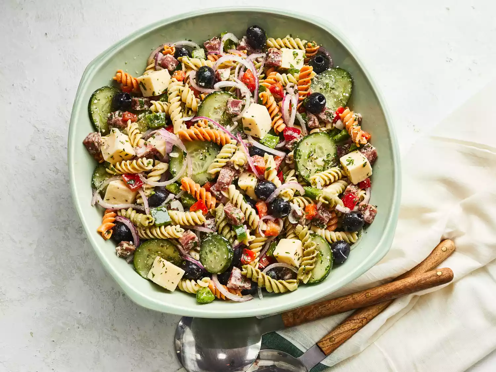

Pasta Salad

Description
Pasta salad (pasta fredda) is a salad dish prepared with one or more types of pasta, almost always chilled, and most often tossed in a vinegar, oil, or mayonnaise-based dressing. It is typically served as an appetizer, side dish or a main course. Pasta salad is often regarded as a spring or summertime meal,
but it can be served any time of year.
Ingredients
- 1 package uncooked tri-color rotini pasta
- 6 ounces pepperoni sausage, diced
- 6 ounces provolone cheese, cubed
- 1 medium red onion, very thinly sliced and cut into 1-inch pieces
- 1 small cucumber, thinly sliced
- 3/4 cup green chopped green bell pepper
- 3/4 chopped red bell pepper
- 1(6 ounce) can pitted black olices, drained
Dressing
- 1/2 cup olive oil
- 1/4 cup red wine vinegar
- 2 cloves garlic, minced
- 1 teaspoon dried basil
- 1 teaspoon dried oregano
- 1/2 teaspoon ground mustard seed
- 1/4 teaspoon salt
- 1/8 teaspoon ground black pepper
Directions
Step 1
- Gather all ingredients
Step 2
- Bring a large pot of lightly salted water to a boil. Add rotini and cook until tender yet firm to the bite, 8 to 10 minutes. Drain, rinse with cold water, and drain again.
Step 3
- Transfer drained, cooked pasta to a large bowl. Add pepperoni, provolone cheese, red onion, cucumber, bell peppers, olives, parsley, and Parmesan cheese.
Step 4
- Mix olive oil, vinegar, garlic, basil, oregano, ground mustard, salt, and pepper for dressing in a jar with a lid. Seal the jar, and shake until well combined.
Step 5
- Pour dressing over the pasta salad; toss until well coated. Serve immediately, or cover and chill in the refrigerator for up to 8 hours before serving.
Back to main